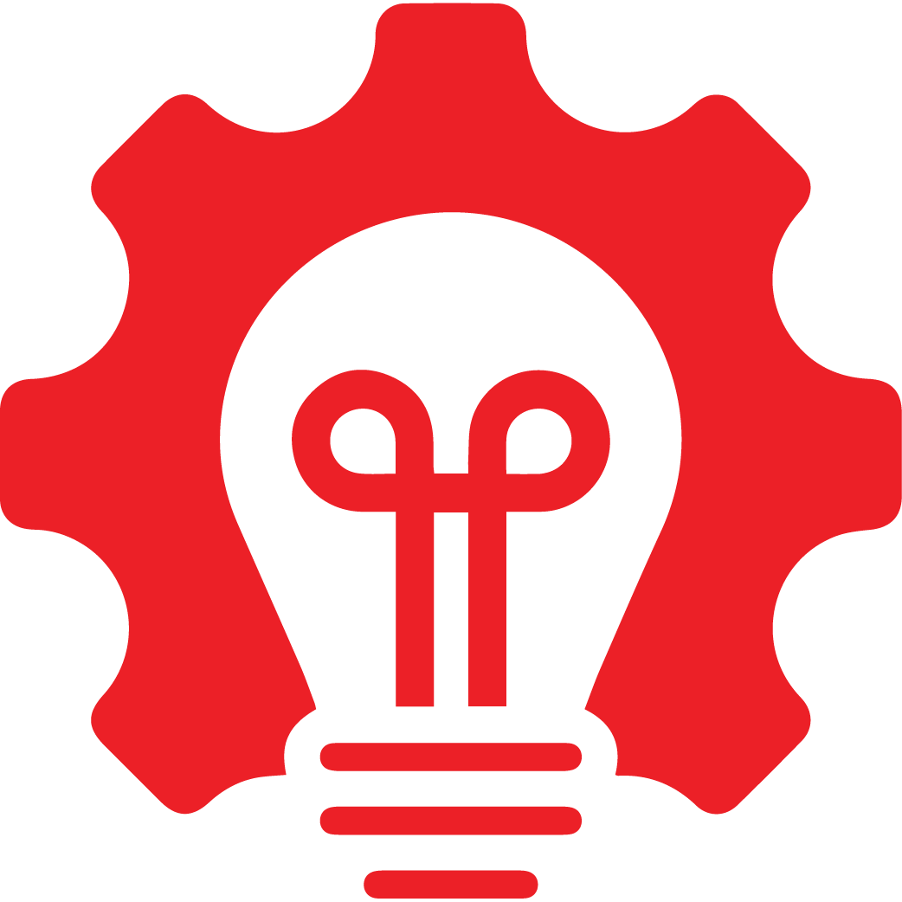

IAQ AT A GLANCE
One group, measured across the globe
From a Malaysian indoor air quality specialist to a total facility solutions provider operating across 8 countries. Drag the globe. The numbers are the record.
0+
Completed projects
0
m² cleanroom built-up
0
Employees group-wide
0
Countries, global offices

0
Safe manhours
0t
Carbon reduced / yr
8 countries · one standard of clean · offices indicative